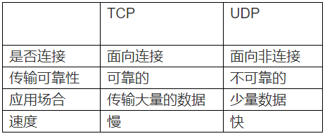

TCP和UDP区别

UDP
UDP 与 TCP 的主要区别在于 UDP 不一定提供可靠的数据传输。事实上，该协议不能保证数据准确无误地到达
目的地。UDP 在许多方面非常有效。当某个程序的目标是尽快地传输尽可能多的信息时（其中任意给定数据的重
要性相对较低），可使用 UDP。ICQ 短消息使用 UDP协议发送消息。
TCP
TCP的目的是提供可靠的数据传输，并在相互进行通信的设备或服务之间保持一个虚拟连接。TCP在数据包接收
无序、丢失或在交付期间被破坏时，负责数据恢复。它通过为其发送的每个数据包提供一个序号来完成此恢复。
记住，较低的网络层会将每个数据包视为一个独立的单元，因此，数据包可以沿完全不同的路径发送，即使它
们都是同一消息的组成部分。这种路由与网络层处理分段和重新组装数据包的方式非常相似，只是级别更高而
已。为确保正确地接收数据，TCP要求在目标计算机成功收到数据时发回一个确认（即 ACK）。如果在某个时
限内未收到相应的 ACK，将重新传送数据包。如果网络拥塞，这种重新传送将导致发送的数据包重复。但是
，接收计算机可使用数据包的序号来确定它是否为重复数据包，并在必要时丢弃它。
UDP 的主要特点
1. UDP 是无连接的；
2. UDP 使用尽最大努力交付，即不保证可靠交付，因此主机不需要维持复杂的链接状态（这里面有许多参数）；
3. UDP 是面向报文的；
4. UDP 没有拥塞控制，因此网络出现拥塞不会使源主机的发送速率降低（对实时应用很有用，如 直播，实时
视频会议等）；
5. UDP 支持一对一、一对多、多对一和多对多的交互通信；
6. UDP 的首部开销小，只有8个字节，比TCP的20个字节的首部要短。
TCP 的主要特点
1. TCP 是面向连接的。（就好像打电话一样，通话前需要先拨号建立连接，通话结束后要挂机释放连接）；
2. 每一条 TCP 连接只能有两个端点，每一条TCP连接只能是点对点的（一对一）；
3. TCP 提供可靠交付的服务。通过TCP连接传送的数据，无差错、不丢失、不重复、并且按序到达；
4. TCP 提供全双工通信。TCP 允许通信双方的应用进程在任何时候都能发送数据。TCP 连接的两端都设有发
送缓存和接收缓存，用来临时存放双方通信的数据；
5. 面向字节流。TCP 中的“流”（Stream）指的是流入进程或从进程流出的字节序列。“面向字节流”的含
义是：虽然应用程序和 TCP 的交互是一次一个数据块（大小不等），但 TCP 把应用程序交下来的数据仅仅看成是
一连串的无结构的字节流。
TCP和UDP的区别？
TCP提供面向连接的、可靠的数据流传输，而UDP提供的是非面向连接的、不可靠的数据流传输。
TCP传输单位称为TCP报文段，UDP传输单位称为用户数据报。
TCP注重数据安全性，UDP数据传输快，因为不需要连接等待，少了许多操作，但是其安全性却一般。